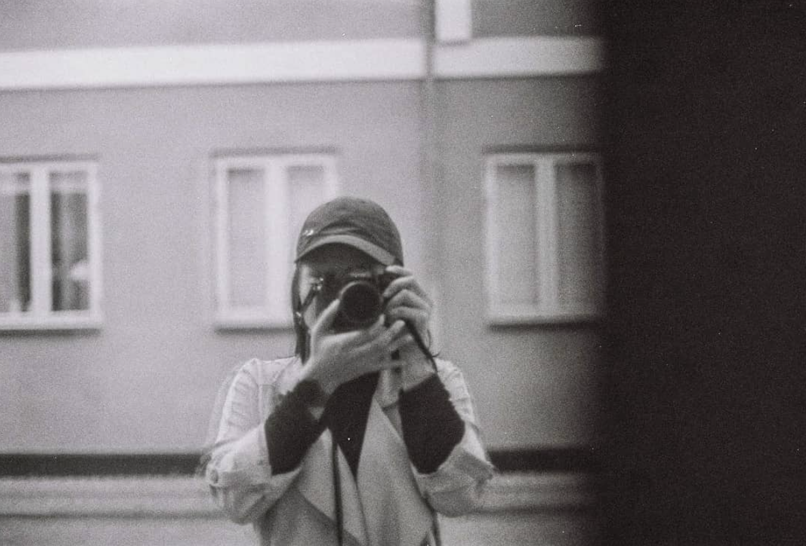

Content creator
Det hele starter med et kaffemøde med dig, hvor jeg finder ind til kernen af din historie. Dit budskab. Sammen taler vi om formålet. Mit job ligger i at formidle dit budskab gennem video og lyd.
Fokus på modtageren
Med stort engagement og kvalitetsbevidsthed går jeg systematisk til opgaverne. Jeg stræber efter at gøre indholdet relevant, og budskabet klart og vedkommende.
Udtalelser
Bjarke J.
Har arbejdet sammen med Fenci i relation til planlægning og afholdelse af events og koncerter i regi af Studenterhuset i Aalborg. Giver de bedste anbefalinger herfra, da Fenci formår at tage teten, men samtidig er lydhør overfor input til forbedringer og nye ideer. Som person er hun helt nede på jorden og med stor flair for både skriftlig og mundtlig formidling.
Katrine Ærthøj Kanne Pedersen
Sand PR
Jeg har haft fornøjelsen af at stifte og udvikle en splinterny podcast fra bunden i samarbejde med Fenci. Vi har selv udtænkt konceptet, og vores målsætning har fra start været at fange de personlige historier, som vi begge er meget interesserede i at få frem i lyset.
I den korte tid jeg har arbejdet med Fenci, har jeg lært hende at kende som en meget ambitiøs og kreativ person med en stor vilje til at lære og dygtiggøre sig inden for alle discipliner i den kommunikative og digitale verden.
Fenci er dygtig til at producere content til mange forskellige platforme og har et godt overblik og kan se, hvordan de gode synergier kan opnås. Hun er målbevidst og går 100 procent efter et godt resultat, men er samtidig god til at søge feedback for at nå det bedste mål ved hjælp af et godt samarbejde.
Jeg kan kun give Fenci mine varmeste anbefalinger og står til rådighed for uddybende spørgsmål i forbindelse med ovenstående.
Trine Dahl Holm
Team Business
Fenci er meget arbejdsom, og hun er dygtig til tekstforfatning og generelt kreativ i forhold til branding ideer. Hun har hjulpet mig med at skubbe gang i min SOME strategi og hun mestrede at finde min “tone of voice”.
Sofie N.
Fenci is the epitome of a completely warm and caring person, who is lucky enough to also have a great work ethic. In my time as her co-worker, with the responsibility of a hundred students, I found her to have a great overview of hectic situations, attention to detail and to be kind to all people around her. Today, I am lucky to be able to call her my friend, but I would also hope that our professional paths cross in the future.
Rasmus Hoffensetz
Walk & Talk
Fenci har et øje for de æstetiske visuelle detaljer når det kommer til video og fotografering. Derudover er hun også skarp ved tasteturet på de sociale medier.
Men vigtigst af alt er hendes gode og glade personlighed og humor...
Mads Rune Holdgaard Halvorsen
Hoffensetz & Halvorsen
Fenci går til opgaver med masser af entusiasme og gå på mod - også når det er ukendt land. Det betyder at hun leverer godt og nytænkende arbejde, og præcis det er grunden til, at hun har mine varmeste anbefalinger.

Bjørn Ask Olesen
Rigsarkivet
Jeg har i perioden 7. oktober til 12. december 2019 arbejdet sammen med Fenci som projektkonsulenter hos Expo 2020 Danmark.
Det har været en stor fornøjelse at arbejde sammen med Fenci, eftersom hun har været en utrolig god kollega, som man altid har kunne regne med og som i den grad har bidraget til fællesskabet på bedste vis.
Fenci har gennem hele perioden arbejdet ansvarsfuldt, effektivt og engageret med de opstillede opgaver. Arbejdet har blandt andet omfattet projektledelse, udarbejdelse af SoMe manual, strategiudvikling og identitetsskabelse for virksomheden. Selvom jeg kun har arbejdet sammen med Fenci i en kort periode, har hun alligevel efterladt et meget positivt indtryk. Hun har gennem hele perioden altid været veloplagt, effektiv og gået til opgaverne med et smil og positivt sind.
Alt i alt giver jeg hermed Fenci de bedste anbefalinger. Jeg er sikker på at hun vil blive en stor gevinst for sin kommende arbejdsplads.
Charlotte Mølgaard Gravesen
Jeg har haft fornøjelsen af at arbejde sammen med Fenci hos Expo 2020 Danmark.
Hun har blandt andet været med til at fastlægge en identitet for virksomheden og udarbejde en forrretningsstrategi. Derudover har hun arbejdet med forskelligartet kommunikation og marketing, f.eks. på sociale medier samt via nyhedsbreve, magasiner og invitationer. Hun har desuden sans for detaljerne og koordinering af opgaverne.
Fenci er meget udadvendt og har viljen til at forstå situationer og mennesker, hvorfor hun nemt er faldet ind i teamet. Hun er ambitiøs og har masser af gå-på-mod. Hun er heller ikke bleg for at bidrage med diverse Friends- og Marvel-referencer.
Hermed mine varmeste anbefalinger af Fenci.
Ann Sofie Milling Høegh
Jeg har arbejdet sammen med Fenci på Studenterhuset i Aalborg, hvor hun var international koordinator. Fenci var en fornøjelse at arbejde sammen med. Hun er en dygtig teamplayer med høj arbejdsmoral og god energi. Hun forstår at holde overblik og få løst udfordringerne, selv i travle og stressede situationer. Hendes stærke lederevner betød at hun nemt kunne samle og motivere medarbejderne på forskellige projekter. Samtidig var hendes interkulturelle kommunikationsevner og store gåpåmod afgørende, i rollen som facilitator ved diverse internationale arrangementer. Som person er Fenci proaktiv, selvstændigt tænkende og let at samarbejde med.
Kasper Nymann Vorm
Working with Fenci has showed me how effective coordination and planning can be done when prepering a semester start for a hundred new university students. Fenci is incredibly well structured, cooperative and has a open and kind heart and mind. I highly recommend her project management and as a colleague!
Bjarke J.
Har arbejdet sammen med Fenci i relation til planlægning og afholdelse af events og koncerter i regi af Studenterhuset i Aalborg. Giver de bedste anbefalinger herfra, da Fenci formår at tage teten, men samtidig er lydhør overfor input til forbedringer og nye ideer. Som person er hun helt nede på jorden og med stor flair for både skriftlig og mundtlig formidling.
Katrine Ærthøj Kanne Pedersen
Sand PR
Jeg har haft fornøjelsen af at stifte og udvikle en splinterny podcast fra bunden i samarbejde med Fenci. Vi har selv udtænkt konceptet, og vores målsætning har fra start været at fange de personlige historier, som vi begge er meget interesserede i at få frem i lyset.
I den korte tid jeg har arbejdet med Fenci, har jeg lært hende at kende som en meget ambitiøs og kreativ person med en stor vilje til at lære og dygtiggøre sig inden for alle discipliner i den kommunikative og digitale verden.
Fenci er dygtig til at producere content til mange forskellige platforme og har et godt overblik og kan se, hvordan de gode synergier kan opnås. Hun er målbevidst og går 100 procent efter et godt resultat, men er samtidig god til at søge feedback for at nå det bedste mål ved hjælp af et godt samarbejde.
Jeg kan kun give Fenci mine varmeste anbefalinger og står til rådighed for uddybende spørgsmål i forbindelse med ovenstående.
Den rette person til opgaven
Igennem video, fotografi og podcasting formidler jeg dit budskab.
Se CasesCases
Se hvordan jeg bruger kompetencer til at hjæpe andre.
Gå Med Det
Historier vi går med
En podcast jeg har skabt sammen med Kathrine Ærthøj Kanne, hvor vi lærer vores gæst bedre at kende, mens vi går.
Drevet af formidling af personlige historier, har vi sat os for at få danskeres historier frem i lyset, i håbet om at inspirere andre.
Lyt med og kom med os på tur, mens vi kommer nærmere ind på vores gæst.
Find os her:
Kaff'?
Bacon ipsum dolor amet flank brisket kielbasa pastrami alcatra pig short ribs strip steak chuck boudin pork belly tenderloin jerky buffalo. Short loin chicken pork frankfurter meatball drumstick. Tenderloin hamburger brisket, turkey tail boudin pork chop pork loin fatback.
Kontakt
Kom ind i varmen, her er hyggeligt...
Developed by Tobias Fridolin | 2020